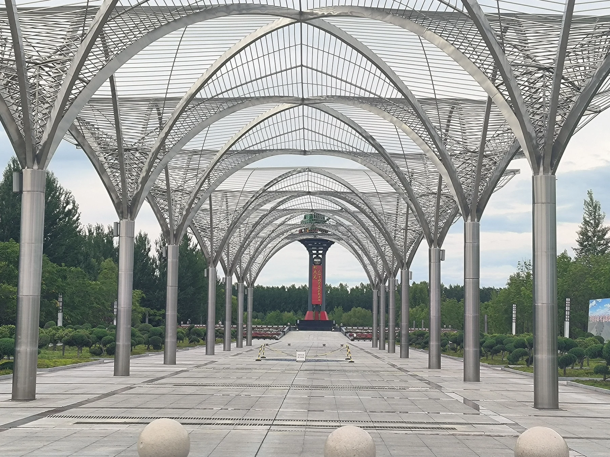
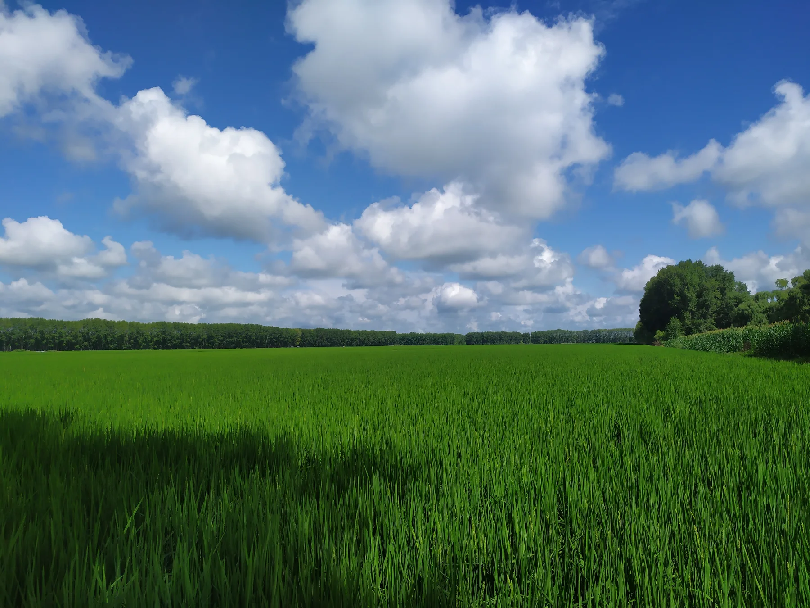
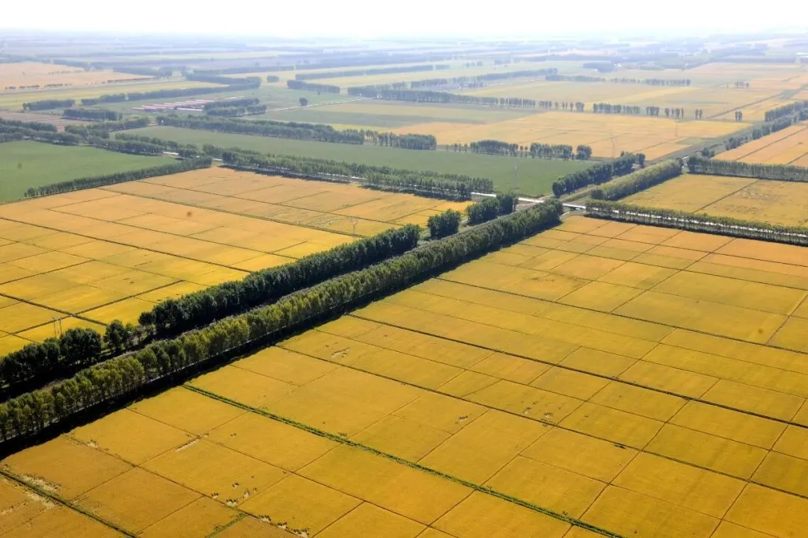
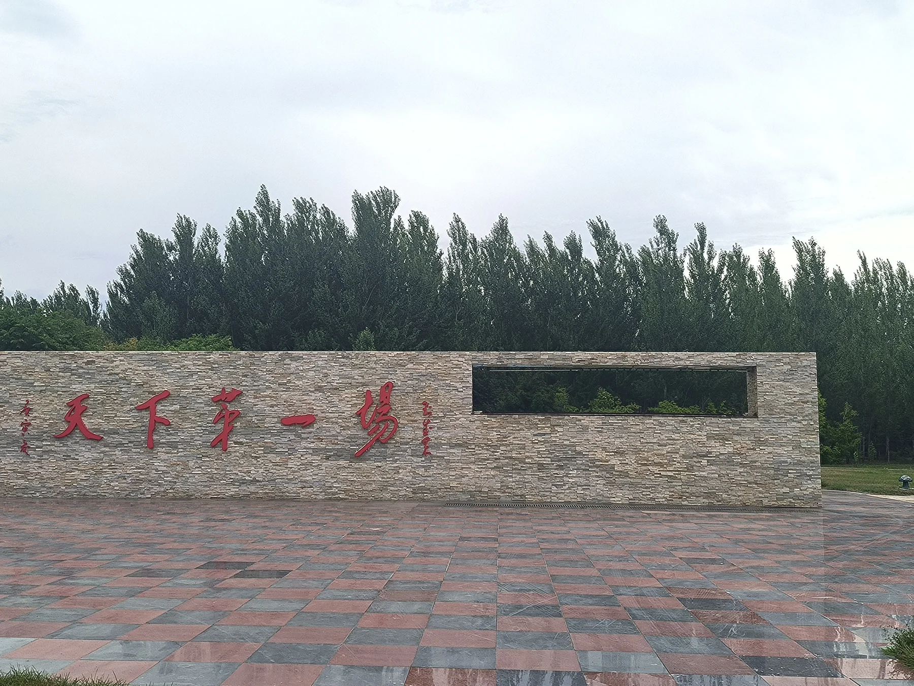
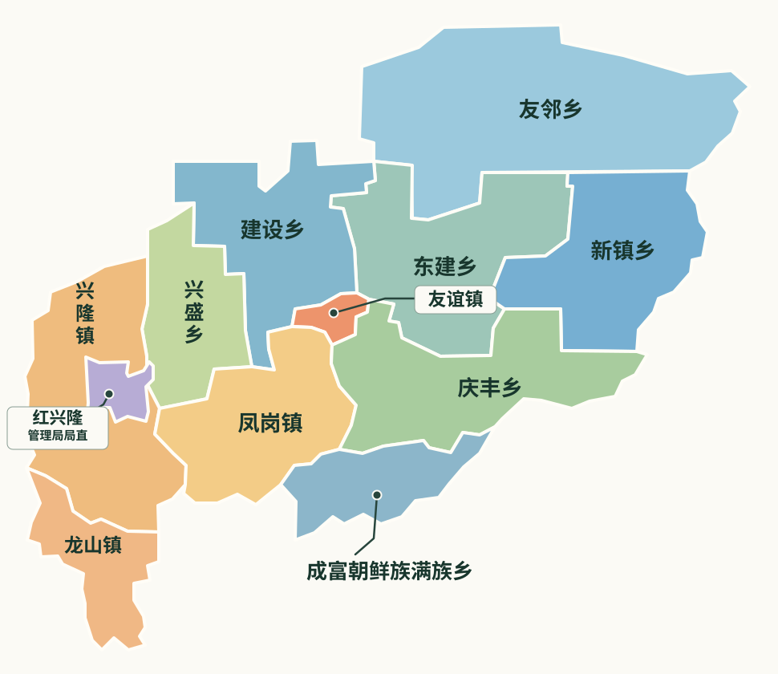
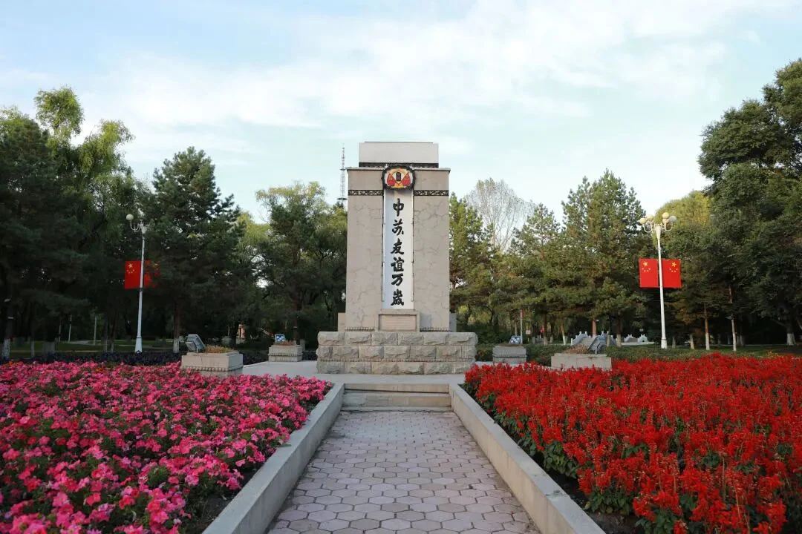
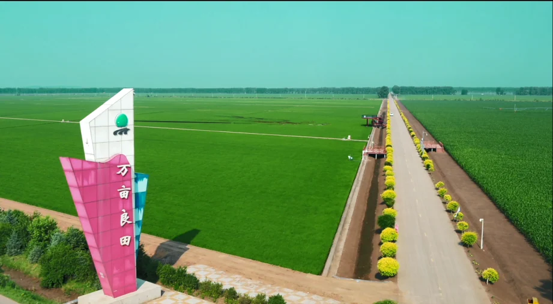

黑龙江省双鸭山市
走进友谊
- 挹娄文化发祥地
- 中苏友谊见证地
- 北大荒精神起源地
- 现代化农业示范地
一座农场，一座县
七星河畔的凤林城址留有汉魏时期的城垣、房址和器物。先民在这里居住、耕作的痕迹，让友谊成为认识挹娄文化发祥的重要地方。
1954年，中苏合作建设国营友谊农场，“天下第一场”由此起步。苏联援助的农机和专家，与来自各地的建设者一同见证了开荒建场的岁月。后来到来的复转官兵、支边青年和知青接续垦荒，友谊也成为北大荒精神发端的地方之一。友谊县由农场得名，县的建制和农场的沿革各有一条脉络。
从早期的机械化开垦，到五分场二队的成套农机试验和精准农业，友谊一直在探索如何把地种好。今天，保护黑土地、用好数字技术，让这片粮田持续稳产，是友谊续写现代农业篇章的方向。

友谊县乡镇分布示意图

友谊农场分场旧图

友谊的历史
沿时间读友谊
汉魏时期 · 七星河畔
挹娄遗址与民族文化
七星河把友谊的凤林城与宝清的炮台山连在一起。沿着古城、馆内族系图和今天的民族乡，可以读到三江平原上相隔很远的几段历史。
1954年起 · 国营农场
中苏合作与友谊建场
从1954年的国书和选址，到福利屯站卸下的卡车，再到专家宿舍里的日常生活，友谊农场是怎样一步步建起来的？

1950年代至1970年代末 · 开垦与兵团
北大荒开垦与知青
建场初期的支边与转业安置、十八团时期城市知青陆续到来、兵团撤销后的人生选择，构成友谊垦荒史里前后相接的几段经历。

1978年至今 · 从大农机到数字农田
黑土地与现代农业
从早期联合收割机到五分场二队的精准农业试点，再到今天的数字农田。夏日稻田画也让人看见现代农艺怎样改变田野。
到友谊，看这些地方
全部景点
县城里的地方史
友谊博物馆
馆址在友谊镇西直路，与友谊公园隔路相对。从汉魏时期的挹娄遗存到国营农场开垦，这里可以看到友谊地区的地方史。

县城散步 · 友谊镇
友谊公园
从临西直路的正门入园，沿着水岸步道走，可以看到长廊、拱桥和树荫。

中苏援建 · 友谊公园
中苏友谊纪念碑
纪念碑位于友谊公园内，碑身竖刻“中苏友谊万岁”。
挹娄文化展示
挹娄文化风情园
挹娄读作 yì lóu。风情园用雕塑和场景讲述汉魏时期三江平原先民的生活。现场看到的议政大殿、七星祭坛和围猎等都是展示场景；真实发掘的城垣、房址在七星河畔的凤林城址。
农垦与机械化 · 友谊镇西
北大荒农机博览园
在友谊镇西侧，从钢拱长廊走到月亮湾畔的露天展区，可以近看轮式拖拉机、联合收割机和其他农机。园区也讲述梁军和友谊农场五分场二队的故事。

现代农业 · 生产现场
万亩良田
从友谊农场的盛夏稻田和稻田画，看五分场二队怎样把连片种植、机械化和数字农业带到田间。